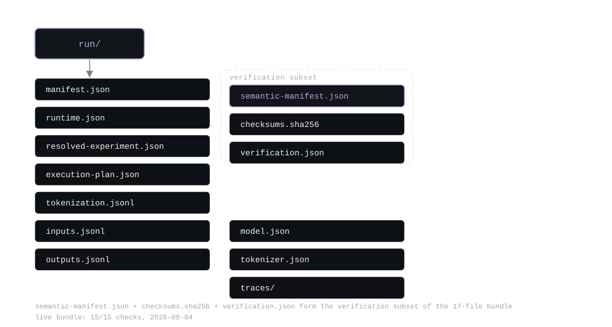
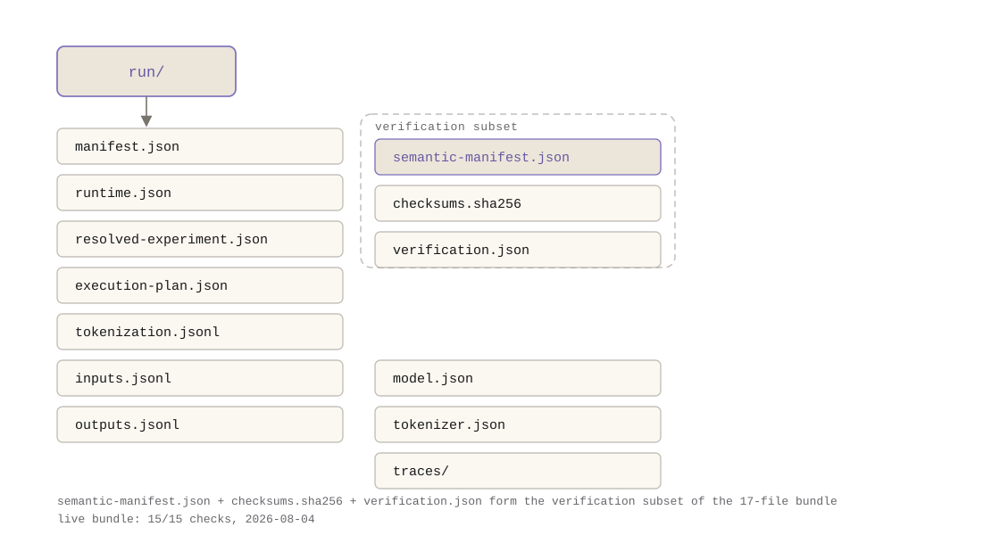
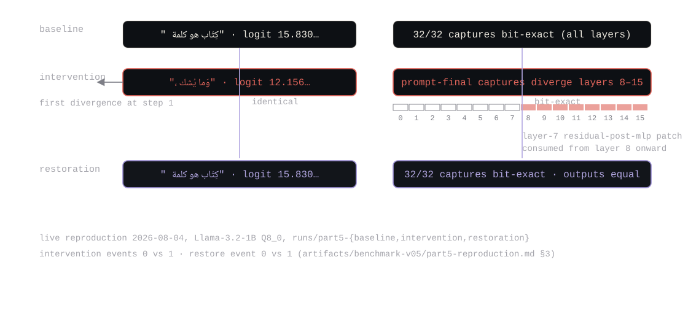
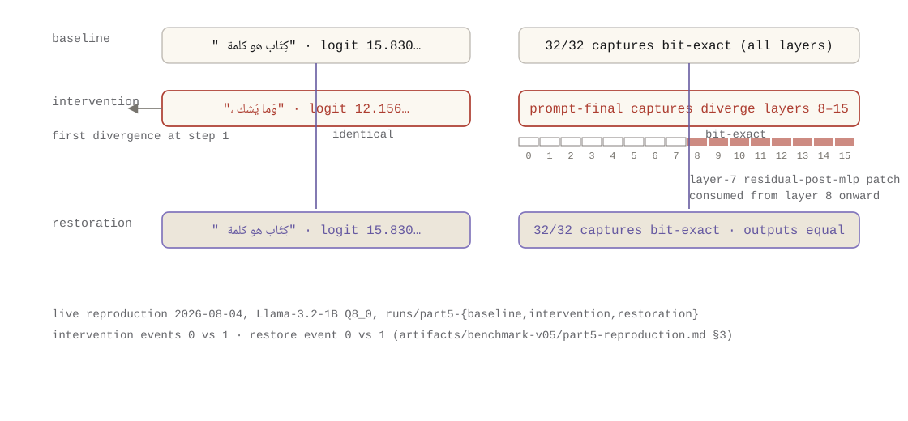
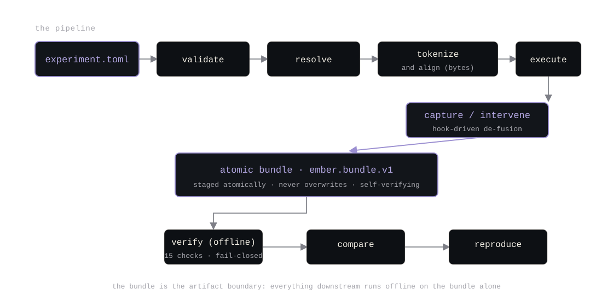
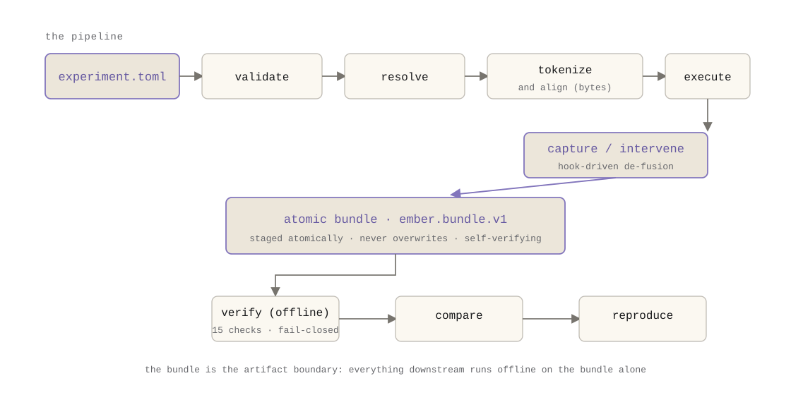

complete draft with explicit citations to repository artifacts. figures are embedded as SVG
(dark/light theme variants under figures/) with captions citing the evidence.
the workflow transcript, hashes,
comparison verdicts, and fail-closed results below were produced live on 2026-08-04 from the
release binary at main @ 359e492 and recorded in
artifacts/benchmark-v05/part5-reproduction.md; the underlying bundles remain on
disk under runs/part5-*.
a researcher who did not write Ember should be able to run a model-internals experiment and verify it without reading Rust. v0.5 makes that a runtime feature, not a promise.
before v0.5, an Ember experiment was a set of command-line flags and a procedure in prose. capture a hidden state here, patch a layer there, compare two runs. it worked, for the person who wrote the flags. for anyone else, it was a series of unverifiable claims: which token did that span match? which hook site is "after attention"? did this run actually execute what the README says it executed? and if the artifact on disk is corrupted, who notices?
the v0.5 contract (docs/v05-research-contract.md) states the response as its
thesis: an experiment is a strict specification that resolves deterministically, executes
through the v0.4 plan with observable hooks, and lands in a self-verifying bundle whose semantic
meaning survives transport. the central claim of this post is the one the release is built
around: reproducibility is an artifact format, a verification procedure, and a fail-closed
contract, not a sentence in a README.
the naive approach is honest and insufficient: write a walkthrough, pin the model file, and trust the reader's machine to agree with yours. it fails on four silent axes:
tokenizers crate reports byte offsets.
a wrapper that validates them against character counts breaks on every non-ASCII prompt ,
which, for Arabic morphology work, is every prompt. the v0.5 changelog records this as a
fixed bug (CHANGELOG.md, v0.5): "the wrapper previously validated them against
character counts, which broke all non-ASCII prompts."
ember.experiment.v1 is strict TOML with recorded defaults and fail-closed
validation that names the exact field path of any error. the reference workflow
(examples/experiments/) is one Arabic sentence containing the marked word
كِتَاب ("book"), two capture plans, and, in the intervention leg, one in-place
replacement (spec excerpt, examples/experiments/morphology-intervention.toml):
[[captures]]
id = "target-final-subtoken"
site = "residual-post-mlp"
layers = "all"
[captures.tokens]
kind = "matched-span"
text = "كِتَاب"
occurrence = 0
subtokens = "final"
[[interventions]]
id = "replace-layer7"
site = "residual-post-mlp"
layers = [7]
operation = { kind = "replace" }
source = { kind = "capture-from-current-run", capture_id = "target-final-subtoken" }
[interventions.tokens]
kind = "prompt-final"
three properties do the work. byte-exact token selection: prompt-final, absolute and
relative positions, generated steps, and matched spans with occurrence and subtoken selection,
all resolved against byte offsets (contract sections 5–7). semantic hook identity: the
six sites have a frozen machine-readable descriptor table (ember.hook.v1) mapped
onto the v0.4 hook stages. deterministic resolution: the same spec on the same
supported environment produces the same resolved experiment, the same token selection, and the
same plan, timestamps, hostnames, and local paths never enter the semantic identity (contract
sections 13–14).
interventions are the v0.2 mechanism with a grammar: replace, zero, scale, interpolate,
add-delta, and restore-original, with fail-closed source validation, a source that does not
resolve to exactly one record is an error, not a guess. cross-bundle sourcing is explicit:
an intervention can pull a row from a different bundle, which is what the v0.5.1
capture-from-bundle evidence exercises (artifacts/benchmark-v05/capture-from-bundle/).
and because the fusion set is frozen (v0.4), the v0.5 de-fusion policy is short: only F5
eliminates a hook-observable tensor, and a capture or intervention targeting it forces the
unfused route with the reason recorded (contract section 9–10).
a run lands in ember.bundle.v1: staged atomically, never overwriting an existing
directory, with a semantic manifest whose hashes are run-invariant and a payload hash over
manifests plus the semantic manifest itself. execution plans are sanitized before hashing
(the build timestamp becomes unix-0) so the plan hash does not leak machine state
(CHANGELOG.md, v0.5). the layout, reproduced from a live run on 2026-08-04
(runs/part5-baseline):


(the real bundle also carries inputs.jsonl, outputs.jsonl,
model.json, traces/events.jsonl, and tokenizer.json ,
17 files total, listed in
artifacts/benchmark-v05/part5-reproduction.md.) the manifest pins model and
tokenizer SHA-256s; a different file fails closed before a single token is computed
(examples/experiments/README.md).
ember experiment verify runs 15 basic checks fully offline, structure, schema
compatibility, recomputed plan/semantic/payload hashes, per-file payload checksums, and
tokenization/model deep checks when requested. the fail-closed behavior is the point, so here
is the test, reproduced live on 2026-08-04
(artifacts/benchmark-v05/part5-reproduction.md section 4):
# byte flip in the safetensors HEADER region
$ ember experiment verify part5-corrupt
Error: safetensors header is not valid JSON: invalid unicode code point
# byte flip in the tensor DATA region
$ ember experiment verify part5-corrupt
[ok] execution plan hash: plan hash 624ec2e08b63
[ok] semantic hash: recomputed f01c90f4deb4 vs stored f01c90f4deb4
[ok] payload hash: recomputed ed0b870f94c6 vs stored ed0b870f94c6
[FAIL] semantic payload checksums: captures/tensors.safetensors: checksum mismatch
verdict: FAILED
# control
$ ember experiment verify runs/part5-baseline
verdict: verifiedone flipped byte in a captured tensor produces a named failure, not a silent mismatch. that is the fail-closed contract: anything that changed is either verified or named.
ember experiment compare separates semantic facts from runtime noise: timestamps,
tps, and RSS are reported but never allowed to decide identity
(docs/v05-research-contract.md gate g). the live reproduction of the reference
workflow gives the whole causal shape in one table
(artifacts/benchmark-v05/part5-reproduction.md section 3):
| run | generated text | final top-1 logit |
|---|---|---|
| baseline | " كِتَاب هو كلمة" | 15.830419540405273 |
| intervention (replace layer-7 prompt-final row with the target-subtoken row) | "، وَما يُشك" | 12.156656265258789 |
| restoration | " كِتَاب هو كلمة" | 15.830419540405273 |
the comparison reports it structurally: baseline vs intervention ,
generated_tokens_equal: false, first_divergence_step: 1, and the
captured prompt-final tensors diverge from layer 8 onward (the layer-7
residual-post-mlp replacement is applied after that layer's residual adds per the
contract's intervention timing, so layers 8+ consume the replaced value). baseline vs
restoration, generated_tokens_equal: true, generated_text_equal: true,
final_top1_equal: true, no divergence step, and all 32 captured tensors bit-exact.
the restoration reproduces the baseline down to the same final logit, to the last recorded
f32 digit.


the same shape appears in the v0.5.1 cross-bundle evidence
(artifacts/benchmark-v05/capture-from-bundle/, CHANGELOG v0.5.1): replace layer
8's row with the baseline bundle's layer-3 row → layers 0–8 bit-exact, 9–15 diverge; add
restore-original → the baseline is reproduced with all 16 capture layers exact and
outputs equal.
the whole pipeline, run live on 2026-08-04 (commands in the evidence file; specs at
examples/experiments/):
$ ember experiment validate examples/experiments/morphology-intervention.toml
inputs: 1 captures: 2 interventions: 1 defaults applied: 2
$ ember experiment run examples/experiments/morphology-layerwise-capture.toml
bundle written to runs/part5-baseline
semantic hash: f01c90f4deb4…
payload hash: ed0b870f94c6…
verification: 15 check(s) passed
$ ember experiment run …/morphology-intervention.toml # bundle + 15/15
$ ember experiment run …/morphology-restoration.toml # bundle + 15/15
$ ember experiment verify runs/part5-baseline
verdict: verified
$ ember experiment compare runs/part5-baseline runs/part5-restoration
# generated tokens equal: true; all 32 captures bit-exact; restore event recorded

each step is a subcommand with a deterministic, machine-readable output. the validation ladder
is: validate → resolve → tokenize and align →
execute → capture/intervene → atomic bundle → verify →
compare → reproduce.
the machinery must not contaminate ordinary inference (contract gate h): with the experiment
system unused, a run takes 2.61 s / 2,751,024 KB RSS versus 2.58 s / 2,751,028 KB for the same
workload without it; experiment workloads add 2.2% RSS against a ≤3% gate
(artifacts/benchmark-v05/SUMMARY.json). no experiment spec is parsed and no hook
fires unless the experiment subcommand runs.
docs/v05-research-contract.md section 17).the workflow exists because a research question failed, the Arabic-selective quantization hypothesis of the pilot. the next post tells that story: the null result, the rare boundary failures, and the causal-localization toolchain that the v0.2–v0.5 instruments were built to run.